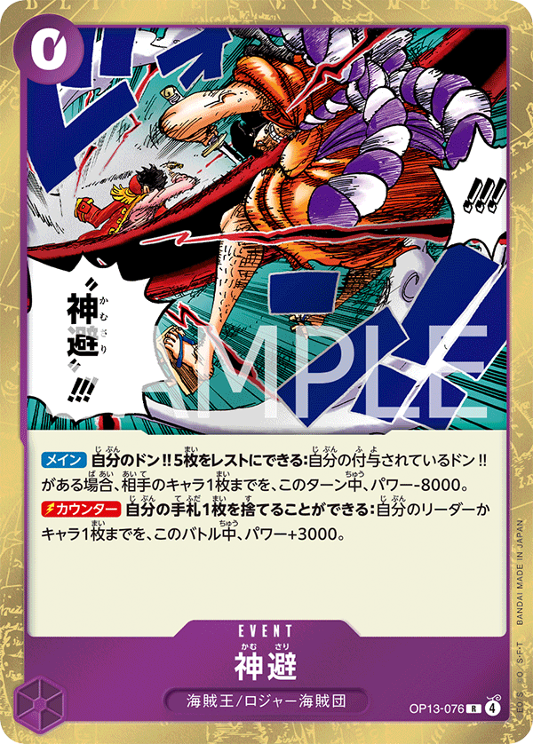
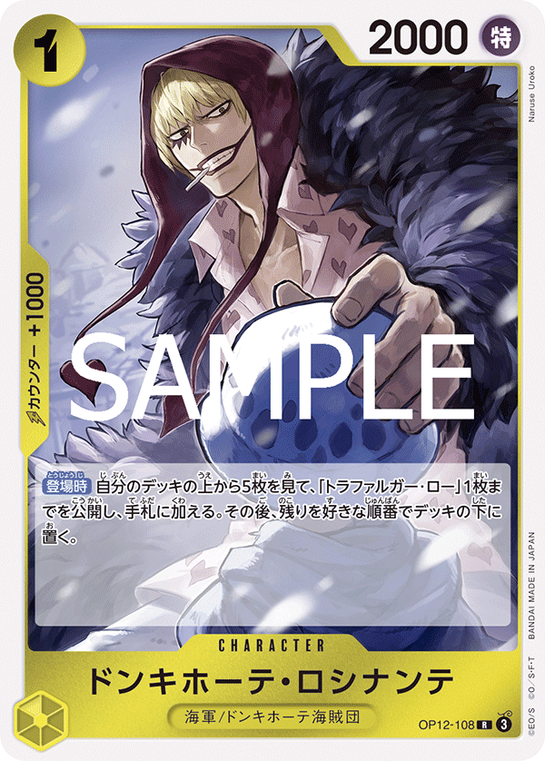
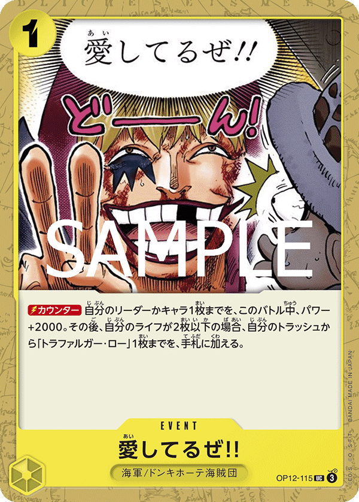
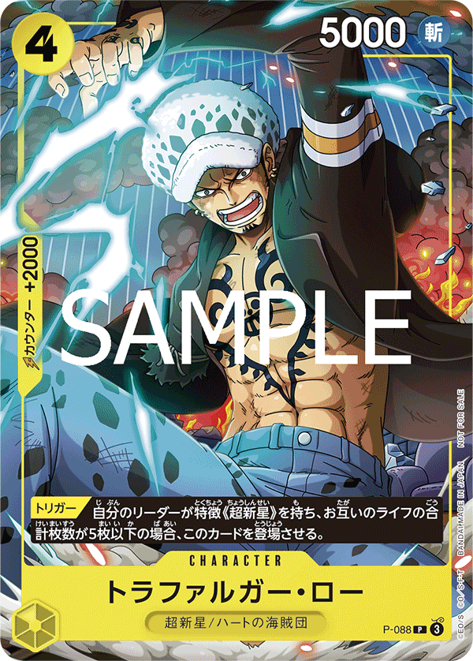
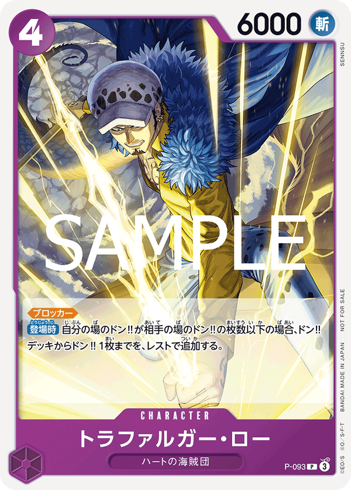
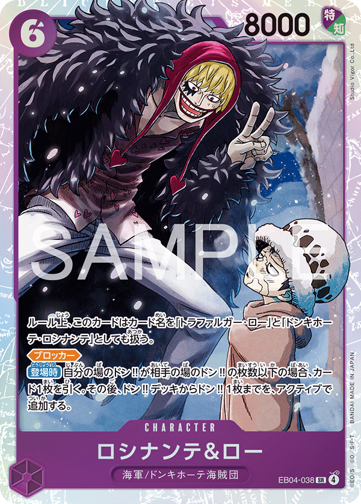
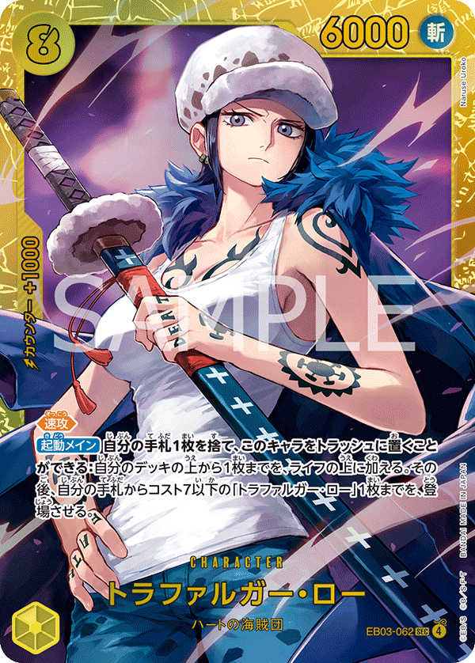
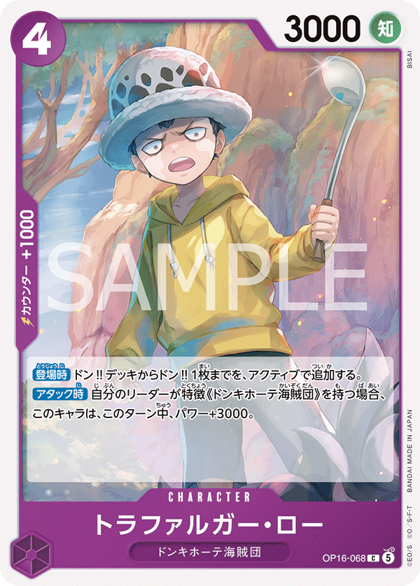

Donquixote Rosinante (061) (OP12-061)Donquixote Rosinante (061) (OP12-061)
Donquixote Rosinante (061) (OP12-061)Donquixote Rosinante (061) (OP12-061)
×2 ×4
×4
×4
×4×1
×4
×4 ×3
×3 ×4
×4
×4 ×4
×4
×2 ×4
×4 ×4
×4
×2 ×1
×1
| Turn | Phase | Expected opp | My response | Cards |
|---|---|---|---|---|
| T1 | my_turn | Going first, 1 DON. Shanks plays OP09-002 Uta (1c, 2000). | Play OP12-108 Rosinante (1c, 2000, 1000 counter). | OP12-108 OP09-069 |
| T2 | opp_turn | Shanks leader 5000 swings — HITS via tie. Uta may swing 2000 at a body. | Counter leader 5000: Rosinante 5000 + 2000 counter = 7000 > 5000 = fail. Or take 1 life at 4 (drops to 3) and bank hand. | OP12-108 OP12-112 |
| T3 | my_turn | Shanks deploys OP09-011 Hongo (3c, 3000, 2000 counter) and may swing leader. | Activate Rosinante [DON!! 1] → P-088 Trafalgar Law (4c, 5000) at 2 cost. Play P-088. Swing Rosinante 5000 + 1 DON = 6000 into Shanks 5000 leader for clean hit. | P-088 P-093 |
| T4 | opp_turn | OP12-008 Shanks (4c, 6000) lands and swings 6000. Multi-attack (median 2). | Counter 6000 swing: Rosinante 5000 + 2000 = 7000 > 6000 = fail. If OP12-008 K.O.'s P-088 Law, leader passive replaces the K.O. with a life-card draw. | OP12-108 OP12-112 |
| T5 | my_turn | OP09-013 Yasopp SP (5c, 6000) and OP12-008 stack pressure. | Play EB04-058 Borsalino (5c, 6000). Multi-swing: P-088 5000 + Borsalino 6000 + leader 5000 = 3 attacks. Shanks at 5 life — pressure it down. | EB04-058 P-093 |
| T6 | my_turn | Shanks lands OP09-009 Benn.Beckman SP (7c, 7000). | Play EB04-038 Rosinante & Law (6c, 8000). Swing 8000 into Benn.Beckman 7000 for KO. Stack pressure for the close. | EB04-038 OP16-065 |
| T7 | opp_turn | OP06-007 Shanks SP (10c, 12000) lands and swings 12000. | If a Law is attacked and K.O.'d, leader passive replaces with life-card draw — burns the 12000 swing for zero card economy. Counter remaining 6000 swings: Rosinante 5000 + 2000 = 7000 > 6000 = fail. | OP12-108 OP12-112 EB04-038 |
| Turn | Phase | Expected opp | My response | Cards |
|---|---|---|---|---|
| T1 | opp_turn | Shanks plays OP09-002 Uta. No attack T1. | Pass. | |
| T2 | my_turn | Shanks leader 5000 will swing on their T2 — HITS via tie. | Play OP12-108 Rosinante + OP09-069 Trafalgar Law. Swing Rosinante 5000 leader into Shanks 5000 leader for trade. | OP12-108 OP09-069 |
| T3 | opp_turn | Shanks deploys OP09-011 Hongo and may swing 6000 + leader 5000. | Counter the 6000 swing: Rosinante 5000 + 2000 = 7000 > 6000 = fail. Counter the 5000 leader swing: Rosinante 5000 + 2000 = 7000 > 5000 = fail. | OP12-108 OP12-112 |
| T4 | my_turn | OP12-008 Shanks (4c, 6000) lands. | Activate Rosinante [DON!! 1] → P-093 (4c, 6000) at 2 cost. Play P-093. Swing 6000 into Shanks 5000 leader for clean hit. | P-093 P-088 |
| T5 | my_turn | Yasopp SP + Shanks character on board, multi-attack. | Play EB04-058 Borsalino (5c, 6000). Triple-swing P-093 + Borsalino + leader. | EB04-058 P-093 |
| T6 | my_turn | OP09-009 Benn.Beckman SP lands. | Play EB04-038 Rosinante & Law (6c, 8000) or OP16-065 Sakazuki (7c, 8000). Swing 8000 into Beckman 7000 for KO. | EB04-038 OP16-065 |
| T7 | opp_turn | OP06-007 Shanks SP (12000) closes. | Let Shanks K.O. a Law — leader passive replaces with life-card draw. Counter the rest: Rosinante 5000 + 2000 = 7000 > 6000 = fail. | OP12-108 OP12-112 |
| Turn | Phase | Expected opp | My response | Cards |
|---|---|---|---|---|
| T1 | my_turn | Going first, 1 DON. Opp Rosinante plays OP12-108 (1c). | Play OP12-108 Rosinante (1c, 2000, 1000 counter). | OP12-108 OP09-069 |
| T2 | opp_turn | Opp Rosinante leader 5000 swings — HITS via tie. | Counter Rosinante 5000 + 2000 = 7000 > 5000 = fail. Or take 1 life. | OP12-108 OP12-112 |
| T3 | my_turn | Opp activates [DON!! 1] for a 4-cost Law deploy and swings. | Activate Rosinante [DON!! 1] → P-088 (4c, 5000) at 2 cost. Play P-088. Swing Rosinante 5000 + 1 DON = 6000 into opp Rosinante 5000 leader for clean hit. | P-088 P-093 |
| T4 | opp_turn | Opp lands EB04-058 Borsalino (5c, 6000) or another Law and swings 6000. Multi-attack (median 2). | Counter 6000 swing: Rosinante 5000 + 2000 = 7000 > 6000 = fail. If opp attacks P-088 (5000) and K.O.'s it via 6000 swing, your leader passive replaces with life-card draw. | OP12-108 OP12-112 |
| T5 | my_turn | Opp stacks 5-cost body (EB04-058 or OP15-114 Wyper splash). | Play EB04-058 Borsalino (5c, 6000) yourself. Multi-swing P-088 + Borsalino + leader for life pressure. Race to land EB04-038 first. | EB04-058 P-093 |
| T6 | my_turn | Opp prepares EB04-038 (6c, 8000) deployment. | Play EB04-038 Rosinante & Law (6c, 8000) yourself FIRST. Swing 8000 into opp Borsalino 6000 for KO — break their board. | EB04-038 OP16-065 |
| T7 | opp_turn | Opp lands EB04-038 (8000) or OP16-065 Sakazuki (7c, 8000) and lethal-pushes. | Counter 8000 swing: Rosinante 5000 + 2000 + 2000 = 9000 > 8000 = fail. Otherwise let it K.O. a Law for the leader-passive life-card draw. | OP12-108 OP12-112 EB04-038 |
| Turn | Phase | Expected opp | My response | Cards |
|---|---|---|---|---|
| T1 | opp_turn | Opp plays OP12-108. No attack T1. | Pass. | |
| T2 | my_turn | Opp Rosinante leader 5000 will swing on their T2 — HITS via tie. | Play OP12-108 + OP09-069. Swing Rosinante 5000 leader into opp Rosinante 5000 leader for trade. | OP12-108 OP09-069 |
| T3 | opp_turn | Opp [DON!! 1] + 4-cost Law deploy + leader swing. | Counter leader 5000: Rosinante 5000 + 2000 = 7000 > 5000 = fail. | OP12-108 OP12-112 |
| T4 | my_turn | Opp lands EB04-058 (5c, 6000). | Activate Rosinante [DON!! 1] → P-093 (4c, 6000) at 2 cost. Play P-093. Swing 6000 into opp Rosinante 5000 leader for clean hit. | P-093 P-088 |
| T5 | my_turn | Opp multi-attacks with leader + Borsalino + Law. | Play EB04-058 Borsalino. Multi-swing P-093 + Borsalino + leader. | EB04-058 P-093 |
| T6 | my_turn | Opp prepares EB04-038 or OP16-065 Sakazuki. | Play EB04-038 Rosinante & Law (8000). Race to deploy first. Swing 8000 into opp Borsalino 6000 for KO. | EB04-038 OP16-065 |
| T7 | opp_turn | Opp lethal push with EB04-038 / OP16-065 + leader + Borsalino. | Counter 8000 swing: Rosinante 5000 + 2000 + 2000 = 9000 > 8000 = fail. Or let it K.O. a Law for passive trigger. | OP12-108 OP12-112 |

| Turn | Phase | Expected opp | My response | Cards |
|---|---|---|---|---|
| T1 | my_turn | Going first, 1 DON. Enel goes 1→3 DON sequence; plays 1-cost setup. | Play OP12-108 Rosinante (1c, 2000, 1000 counter). | OP12-108 OP09-069 |
| T2 | opp_turn | Enel has 3 DON, swings leader 5000 — HITS via tie. | Counter Rosinante 5000 + 2000 counter (OP12-112 Baby 5) = 7000 > 5000 = fail. Or take 1 — preserve counter. | OP12-108 OP12-112 |
| T3 | my_turn | Enel has 5 DON, deploys OP15-114 Wyper (5c, 6000) or sets up OP15-118. | Activate Rosinante [DON!! 1] → P-088 Trafalgar Law (4c, 5000) at 2 cost. Play P-088. Swing Rosinante 5000 + 1 DON = 6000 into Enel 5000 leader for clean hit. | P-088 P-093 |
| T4 | opp_turn | Enel has 6 DON (DonDeckOverride cap), plays OP15-118 Enel (6c, 8000). Has cannot-be-removed-by-effects protection at 6 DON or less. | Counter any leader swing — Rosinante 5000 + 2000 = 7000 > 5000 = fail. Don't try to remove OP15-118 with bounce/effect — blocked per rules; plan combat KO via 8000+ swing next turn. | OP12-108 OP12-112 |
| T5 | my_turn | OP15-118 Enel (8000) swings 8000 at Rosinante or P-088 Law. 8000 HITS heavily. | Play EB04-058 Borsalino (5c, 6000) to develop board. If OP15-118 attacks the Law and K.O.'s it, Rosinante leader passive replaces the K.O. with a life-card draw — burns 8000 swing for zero card economy on Enel's side. | EB04-058 P-093 |
| T6 | my_turn | OP15-118 swings 8000 again; Enel develops more board. | Play OP16-065 Sakazuki (7c, 8000) — the deck's answer to OP15-118. Swing Sakazuki 8000 into OP15-118 8000 — tie, attacker wins, OP15-118 K.O.'d via combat (NOT blocked by effect-immunity per rules §4). This is the matchup-winning swing. | OP16-065 EB04-038 |
| T7 | opp_turn | Enel lethal push without OP15-118 anchor — leader 5000 + 1 DON + Wyper 6000. | Counter 6000s: Rosinante 5000 + 2000 = 7000 > 6000 = fail. If Sakazuki on board, Enel's options shrink; you can still trade Sakazuki 8000 into any future board threat. | OP12-108 OP12-112 OP16-065 |
| Turn | Phase | Expected opp | My response | Cards |
|---|---|---|---|---|
| T1 | opp_turn | Enel has 2 DON on their T1 going first. | Pass. | |
| T2 | my_turn | Enel will play OP15-114 Wyper (5c, 6000) when at 4 DON on their T2. | You have 4 DON. Play OP12-108 + OP09-069. Swing Rosinante 5000 leader into Enel 5000 leader for trade. | OP12-108 OP09-069 |
| T3 | opp_turn | Enel has 6 DON, plays OP15-118 Enel (6c, 8000) — the protected anchor lands T3. | Counter leader swing: Rosinante 5000 + 2000 = 7000 > 5000 = fail. Plan: combat-KO OP15-118 with Sakazuki on T6. | OP12-108 OP12-112 |
| T4 | my_turn | OP15-118 swings 8000. Multi-attack pressure with leader + Wyper. | Activate Rosinante [DON!! 1] → P-093 Trafalgar Law (4c, 6000) at 2 cost. Play P-093 to develop a Law (leader passive insurance). | P-093 P-088 |
| T5 | my_turn | Enel stacks OP15-114 Wyper + OP15-118 + leader (3 attacks). | Play EB04-058 Borsalino (5c, 6000). Swing P-093 6000 + Borsalino 6000 + leader 5000 into Enel for life pressure. | EB04-058 P-093 |
| T6 | my_turn | Enel pushes lethal with OP15-118 + multi-body. | Play OP16-065 Sakazuki (7c, 8000). Swing Sakazuki 8000 into OP15-118 8000 — combat KO via tie (attacker wins, OP15-118 K.O.'d). Removes Enel's spine. | OP16-065 EB04-038 |
| T7 | opp_turn | Enel lethal without OP15-118 — leader + Wyper + events. | Counter 6000s: Rosinante 5000 + 2000 = 7000 > 6000 = fail. Use leader passive to convert a Law K.O. into life-card draw — your effective 5th life. | OP12-108 OP12-112 |

| Turn | Phase | Expected opp | My response | Cards |
|---|---|---|---|---|
| T1 | my_turn | Going first, 1 DON. Luffy plays a 1-cost on their T1. | Play OP12-108 Rosinante (1c, 2000, 1000 counter) for cheap Yellow body + counter value. | OP12-108 OP09-069 |
| T2 | opp_turn | Luffy leader 5000 swings — HITS Rosinante 5000 via tie. | Counter with OP09-069 Trafalgar Law 1000 + OP12-108 1000 = 5000 + 2000 = 7000 > 5000 = fail. Or take 1 life at 4 (drops to 3) — preserve hand depth. | OP12-108 OP09-069 |
| T3 | my_turn | Luffy deploys a 4-cost Green/Blue body and may rest/bounce one of yours. | Activate Rosinante [DON!! 1] → reduce P-088 Trafalgar Law (4c, 5000) to 2 cost. Play P-088. Swing Rosinante 5000 + 1 DON = 6000 leader into Luffy 5000 leader for clean hit. | P-088 P-093 |
| T4 | opp_turn | Multi-attack (median 2). Luffy may bounce P-088 to hand. | If Luffy bounces a Law, Rosinante passive does NOT replace (bounce ≠ K.O.). Counter the leader swing: Rosinante 5000 + 2000 = 7000 > 5000 = fail. Save Law re-deploys for T5. | OP12-108 OP09-069 |
| T5 | my_turn | Luffy stacks bounce/rest disruption with a 5-cost body. | Play EB04-058 Borsalino (5c, 6000) — Yellow body, harder for Luffy to bounce in one hit. Swing 6000 into Luffy 5000 leader. Re-deploy any bounced Law if DON allows. | EB04-058 P-093 |
| T6 | my_turn | Luffy pushes lethal-setup with multi-body attacks. | Play EB04-038 Rosinante & Law (6c, 8000). Swing 8000 into Luffy 5000 leader for clean hit. Stack pressure to force Luffy into defensive counters. | EB04-038 OP16-065 |
| T7 | opp_turn | Luffy multi-attack lethal push (median 2-3 attacks). | Counter 6000 swings: Rosinante 5000 + 2000 counter = 7000 > 6000 = fail. If a Law on board is being attacked into K.O., leader passive replaces it with a life-card draw — that's your free 5th life. | OP12-108 OP12-112 EB04-038 |
| Turn | Phase | Expected opp | My response | Cards |
|---|---|---|---|---|
| T1 | opp_turn | Luffy plays 1-cost setup. No attack T1. | Pass. | |
| T2 | my_turn | Luffy leader 5000 will swing on their T2 — HITS via tie. | You have 4 DON. Play OP12-108 Rosinante (1c) + OP09-069 Trafalgar Law (1c). Swing Rosinante 5000 leader into Luffy 5000 leader for trade. | OP12-108 OP09-069 |
| T3 | opp_turn | Luffy deploys 4-cost and may bounce/rest. | Counter leader swing — Rosinante 5000 + 2000 counter = 7000 > 5000 = fail. | OP12-108 OP09-069 |
| T4 | my_turn | Multi-attack pressure (median 2). | Activate Rosinante [DON!! 1] → reduce P-093 (4c, 6000) to 2 cost. Play P-093. Swing 6000 into Luffy 5000 leader for clean hit. | P-093 P-088 |
| T5 | my_turn | Luffy stacks bounce/rest tools. | Play EB04-058 Borsalino (5c, 6000). Multi-swing: P-093 6000 + Borsalino 6000 + leader 5000 + 2 DON = 7000. | EB04-058 P-093 |
| T6 | my_turn | Luffy prepares lethal multi-body push. | Play EB04-038 Rosinante & Law (6c, 8000). Swing 8000 into Luffy 5000 leader. | EB04-038 OP16-065 |
| T7 | opp_turn | Luffy multi-attack lethal. | Counter 6000s: Rosinante 5000 + 2000 = 7000 > 6000 = fail. Leader passive replaces a Law K.O. with life-card draw — bank that defense. | OP12-108 OP12-112 |

| Turn | Phase | Expected opp | My response | Cards |
|---|---|---|---|---|
| T1 | my_turn | Going first, 1 DON. Yamato plays 1-cost setup. | Play OP12-108 Rosinante (1c, 2000, 1000 counter). | OP12-108 OP09-069 |
| T2 | opp_turn | Yamato leader 5000 swings — HITS via tie. | Counter: Rosinante 5000 + 2000 counter (OP12-112 Baby 5 in hand or splash) = 7000 > 5000 = fail. At 4 life, taking 1 to bank counter is also fine — preserve hand for T5+ multi-attack. | OP12-108 OP12-112 |
| T3 | my_turn | Yamato deploys OP16-082 Kin'emon (4c, 6000) and threatens board. | Activate Rosinante [DON!! 1] → P-088 Trafalgar Law (4c, 5000) at 2 cost. Play P-088. Swing Rosinante 5000 + 1 DON = 6000 into Yamato 5000 leader for clean hit. | P-088 P-093 |
| T4 | opp_turn | OP16-082 Kin'emon (6000) swings + Yamato leader 5000 swings. Multi-attack (median 1-2). | Counter Kin'emon 6000: Rosinante 5000 + 2000 counter = 7000 > 6000 = fail. If Yamato attacks P-088 Law and K.O.'s it, Rosinante leader passive replaces the K.O. with a life-card draw — Yamato pays 6000 power for zero. | OP12-112 OP12-108 OP09-069 |
| T5 | my_turn | Yamato deploys OP16-098 Yamato character (6c, 5000, 1000 counter) or stacks board. | Play EB04-058 Borsalino (5c, 6000). Swing P-088 Law 5000 + Borsalino 6000 + leader 5000 = 3 attacks. Pressure Yamato's counter pool. | EB04-058 P-093 |
| T6 | my_turn | Yamato lands OP16-085 Kouzuki Momonosuke (9c, 6000) or stacks Kin'emon + leader. | Play EB04-038 Rosinante & Law (6c, 8000). Swing 8000 into Kin'emon 6000 for KO. Yamato now must defend against 8000 follow-up swings. | EB04-038 OP16-065 |
| T7 | opp_turn | Yamato lethal push with Kouzuki + Kin'emon + leader (3 attacks). | Let Yamato K.O. a Law via swing — leader passive replaces with life-card draw. Counter 6000 swings: Rosinante 5000 + 2000 = 7000 > 6000 = fail. Save the leader passive for the largest swing target. | OP12-108 OP12-112 EB04-038 |
| Turn | Phase | Expected opp | My response | Cards |
|---|---|---|---|---|
| T1 | opp_turn | Yamato plays 1-cost. No attack T1. | Pass. | |
| T2 | my_turn | Yamato leader 5000 will swing on their T2 — HITS via tie. | Play OP12-108 Rosinante + OP09-069 Trafalgar Law. Swing Rosinante 5000 into Yamato 5000 leader for trade. | OP12-108 OP09-069 |
| T3 | opp_turn | OP16-082 Kin'emon (4c, 6000) lands and threatens. | Counter leader 5000: Rosinante 5000 + 2000 counter = 7000 > 5000 = fail. | OP12-108 OP12-112 |
| T4 | my_turn | Multi-attack (median 2). Kin'emon + leader. | Activate Rosinante [DON!! 1] → P-093 Trafalgar Law (4c, 6000) at 2 cost. Play P-093. Swing 6000 into Yamato 5000 leader for clean hit. | P-093 P-088 |
| T5 | my_turn | OP16-098 Yamato character lands. | Play EB04-058 Borsalino (5c, 6000). Multi-swing pressure. | EB04-058 P-093 |
| T6 | my_turn | Yamato prepares OP16-085 deployment. | Play EB04-038 Rosinante & Law (6c, 8000). Swing into Kin'emon (6000) for KO. | EB04-038 OP16-065 |
| T7 | opp_turn | Yamato lethal push. | Counter 6000s: Rosinante 5000 + 2000 = 7000 > 6000 = fail. Use leader passive to bank a Law K.O. as a life-card draw. | OP12-108 OP12-112 |

| Turn | Phase | Expected opp | My response | Cards |
|---|---|---|---|---|
| T1 | my_turn | Going first, no draw, 1 DON. Teach will play OP09-095 Laffitte (1c, 1000) on their T1. | Play OP12-108 Donquixote Rosinante (1c, 2000, 1000 counter) — cheap Yellow body that doubles as a counter card later. | OP12-108 OP09-069 |
| T2 | opp_turn | Teach leader 5000 swings — HITS Rosinante 5000 via tie. 1 attack T2. | Counter with OP12-108 Rosinante 1000 + a 2000-counter card from hand → 5000 + 3000 = 8000 holds the 5000 swing easily. Or take 1 life since you have 4. | OP12-108 OP09-069 |
| T3 | my_turn | Teach develops OP16-108 or OP09-099 mid-cost [Trigger] body and may swing leader 5000 again. | Activate Rosinante leader [DON!! 1] to reduce P-088 Trafalgar Law (4c, 5000) to 2 cost. Play P-088 — leaves DON for a leader swing 5000 + 1 DON = 6000 into Teach 5000 leader for clean hit. | P-088 P-093 ST10-010 |
| T4 | opp_turn | Teach lands EB04-058 Borsalino (5c, 6000) or an OP16-108 body and swings 6000. Multi-attack (median 1-2). | Counter 6000: Rosinante 5000 + 2000-counter (e.g., OP10-114 X.Drake if splashed, OP12-112 Baby 5) = 7000 > 6000 = fail. If Teach attacks the Law on board, the leader passive replaces the K.O. with a life-card draw — Teach effectively pays a Trigger card for zero. | OP12-112 OP12-108 P-088 |
| T5 | my_turn | Teach develops OP15-114 Wyper (5c, 6000) or stacks a second [Trigger] body for the redirect war. | Play EB04-058 Borsalino (5c, 6000) — pressure body. Swing P-093 Trafalgar Law 6000 into Teach 5000 leader (+1 DON optional) for clean hit. Force Teach to spend a [Trigger] to redirect or take life. | EB04-058 P-093 OP12-073 |
| T6 | my_turn | Teach lands OP09-093 Marshall.D.Teach (10c, 12000) the next turn or this one. | Play EB04-038 Rosinante & Law (6c, 8000) or OP16-065 Sakazuki (7c, 8000). Swing 8000 into a 6000 Teach body for KO, or into leader for 1 life. Stack pressure so Teach must hold [Trigger] cards for defense, not offense. | EB04-038 OP16-065 OP12-073 |
| T7 | opp_turn | OP09-093 Teach (12000) swings at leader. 12000 HITS clearly; +11000 counter required to fail. | Teach can redirect to a Law and you get the leader passive — the Law goes to life-card-draw instead of K.O. once per turn. Counter remaining 6000 swings: Rosinante 5000 + 2000 counter = 7000 > 6000 = fail. | OP12-108 OP12-112 EB04-038 |
| Turn | Phase | Expected opp | My response | Cards |
|---|---|---|---|---|
| T1 | opp_turn | Teach plays OP09-095 Laffitte (1c) — no attack. | Pass — you go first on T2 with 4 DON. | |
| T2 | my_turn | Teach will swing leader 5000 on their T2 — HITS Rosinante 5000 via tie. | You have 2 DON. Play OP12-108 Rosinante (1c) + OP09-069 Trafalgar Law (1c, 2000, 1000 counter). Swing Rosinante 5000 leader into Teach 5000 leader for trade hit. | OP12-108 OP09-069 |
| T3 | opp_turn | Teach develops OP16-108 (4c [Trigger] body) and swings leader 5000 again. | Counter the 5000 leader swing: Rosinante 5000 + 1000 counter (OP12-108) + 1000 (OP09-069) = 7000 > 5000 = fail. Saves life for the inevitable T6 12000 swing. | OP12-108 OP09-069 |
| T4 | my_turn | Teach lands EB04-058 Borsalino (5c, 6000) or another mid body. | Activate Rosinante [DON!! 1] → reduce P-093 Trafalgar Law (4c, 6000) to 2 cost. Play P-093, swing 6000 into Teach 5000 leader for clean hit. Teach's redirect on the P-093 K.O. triggers your leader passive → life-card draw. | P-093 P-088 |
| T5 | my_turn | Teach stacks OP15-114 Wyper (5c, 6000) and may multi-attack. | Play EB04-058 Borsalino (5c, 6000). Swing P-093 Trafalgar Law 6000 + Borsalino 6000 + leader 5000 = 3 attacks. Force Teach to redirect or counter, draining their [Trigger] hand. | EB04-058 P-093 OP12-073 |
| T6 | my_turn | Teach prepares OP09-093 Teach (10c, 12000) deployment. | Play EB04-038 Rosinante & Law (6c, 8000) — the deck's headline finisher (4 copies, 100% of decks). Swing 8000 into a 6000 Wyper for KO, or into leader for 1 life. | EB04-038 OP16-065 |
| T7 | opp_turn | OP09-093 Teach 12000 swings at leader. | If Teach redirects into a Law, Rosinante leader passive replaces the K.O. with a life-card draw — free defense. Otherwise counter as much of the 12000 as feasible: Rosinante 5000 + 2000 + 2000 + 1000 = 10000 still fails, so prefer redirect or take the hit. | OP12-108 OP12-112 |